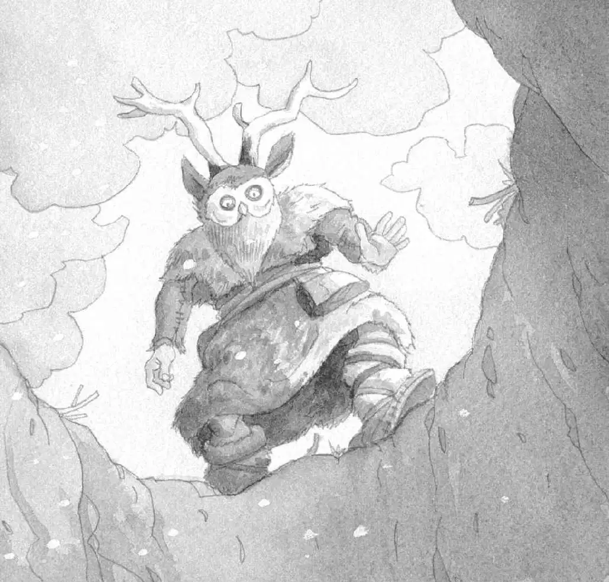

“是花生米的脚印。”安妮说，“我们必须赶紧找到它，不然它会冻死的。”
她用驯鹿皮大衣裹紧身体，往雪地里走去。
杰克背上背包，跟了上去。
小老鼠的脚印指引着他们在岩石间穿行，回到了那片开阔的原野上。
风越刮越猛了。雪在地上打着旋儿，盖住了那些小小的脚印。
“我看不见脚印了！”安妮哀叫道。
此刻，她和杰克站在白茫茫的原野中，注视着被狂风横卷的积雪。
小老鼠的脚印消失了。
“哎呀！”安妮轻轻叫了一声，眼睛向上看着。
杰克循着她的目光望去。在一道悬崖上，赫然出现了一只老虎，一只巨大的老虎，正露着两根尖尖的大长牙。
“剑齿虎。”杰克说。
“但愿它没有看见我们。”安妮悄声说。
“是啊。”杰克压低声说，“我们最好赶快回树屋吧。”
杰克和安妮轻手轻脚地往回走。杰克扭头看了一眼那道悬崖。
剑齿虎已经不见了。
“哦，天哪，”杰克说，“它跑到哪儿去了呢？”
“我们赶快去树林！”安妮喊道。
杰克和安妮拔腿跑了起来。他们跑过白雪皑皑的原野，跑向远处那些光秃秃的参天大树。
突然，杰克听见咔吧一声。
杰克脚下的地面塌了，他跟着掉了下去。
安妮也掉了下去，落在杰克旁边。
在他们身下，是一堆树枝、积雪和泥土。
两人挣扎着站起来。杰克把眼镜往上推了推。
“你没事吧？”他问安妮。
“没事。”安妮回答。
两人同时抬头看去。他们此时在一个很深的洞里，只能看见一片片乌云在头顶的天空移动。
“这是一个陷阱。”杰克说，“肯定是被克鲁马努人用树枝盖住了。因为树枝被雪覆盖了，所以我们没看见。”
“没办法出去了。”安妮说。
安妮说得对，他们被困住了。洞太深，他们根本爬不出去。
“我觉得自己像一只掉进陷阱的动物。”安妮说。
“我也是。”杰克说。
突然，远处传来一声嗥叫。
“是剑齿虎！”安妮轻声说道。
杰克掏出那本冰川时代的书。
他翻到一幅剑齿虎的图片，念出图片下方的文字：
剑齿虎是冰川时代最凶猛的动物。它袭击人类，也袭击猛犸象和其他大型动物。
“哦，天哪！”杰克惊叫一声。
“听！”安妮一把抓住杰克说。
“什么？”杰克吓了一跳。
“我听见了音乐声。”安妮说。
杰克侧耳倾听。可是他只能听见呼呼的风声。
“你听见了吗？”安妮问。
“没有。”杰克回答。
“仔细听啊。”安妮说。
杰克闭上眼睛，全神贯注地听。
他听见了风声。但是这次，他还听见了另一种声音，一种奇怪的、萦绕不绝的音乐声。
“啊！”安妮大喊了一声。
杰克睁开眼睛。
一个戴着驯鹿犄角和猫头鹰面具的人正在洞口处盯着他们。
“巫师。”杰克小声地说。
